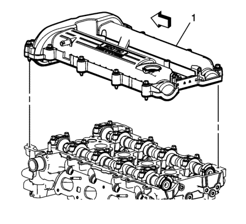
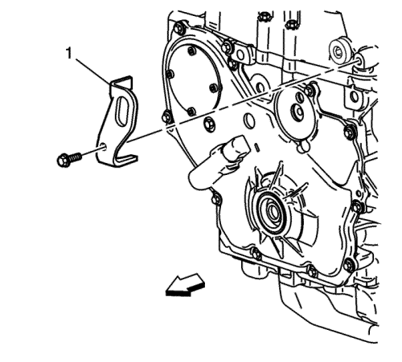
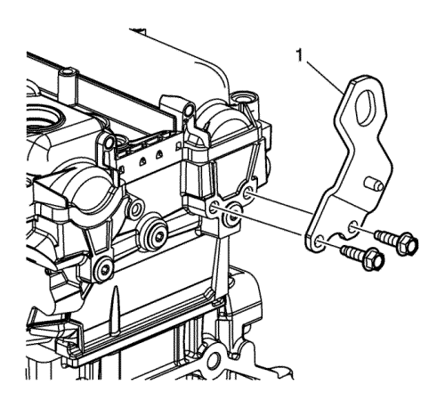
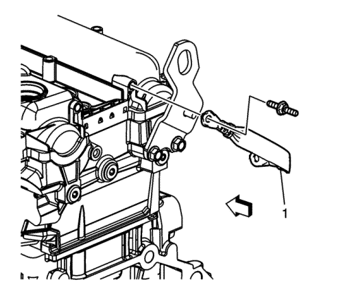
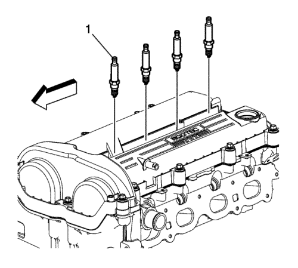
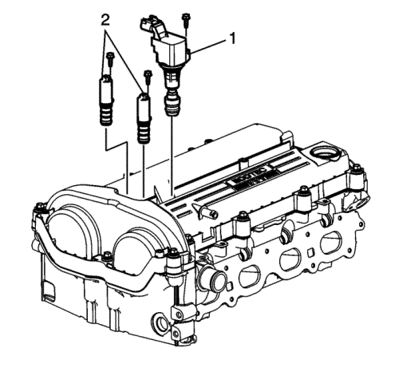

Captiva
Montaje de la tapa de los árboles de levas — LAP, LAT, LE5, LE8, LE9

Monte los NUEVOS pasamuros y los tornillos de la tapa del árbol de levas siempre que durante el montaje vayan a sustituirse junto con los pasamuros.
Ensamble la tapa (1) del árbol de levas y una junta NUEVA. Asegúrese de que la junta esté en la ranura de retención de la tapa del árbol de levas.
Precaución:
Consulte
Precaución con las fijaciones
en la sección Prólogo
Coloque la tapa sobre la culata y apriete los tornillos con la mano. Apriete los tornillos hasta
10 N·m (89 lib. pulg.)
.

Monte el soporte de sustentación delantero (1).
Monte el tornillo frontal del soporte de elevación y apriete hasta
25 N·m (18 lib. pie)
.

Monte el soporte de sustentación trasero (1).
Monte los tornillos del soporte de subida trasero y apriételos hasta
25 N·m (18 lib. pie)
.

Monte la cinta (1) de masa y apriete los tornillos a
10 N·m (89 lib. pulg.)
.

Monte los tapones de la bujía (1) y apriételos hasta
20 N·m (15 lib. pie)
.

Monte la bobina (1) de encendido y apriete el tornillo a
10 N·m (89 lib. pulg.)
.
Válvulas magnéticas (2) de los actuadores de posición de los árboles de levas.
Monte los tornillos de las válvulas solenoides de los actuadores de posición de los árboles de levas y apriételos a
10 N·m (89 lib. pulg.)
.
© Copyright Chevrolet Europe. All rights reserved